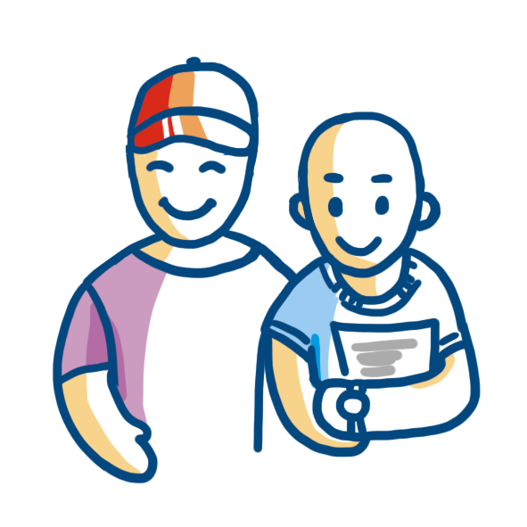

Сервис поможет вам создать собственную страничку по сбору средст для фонда.Присоединитесь к любой акции фонда с личной кампанией помощи. Расскажите о своем желании помочь друзьям, родным и близким.
Мы стартовали с ежегодной акции Безумное чаепитие. Но уже совсем скоро появятся новые возможности для организации помощи нашим подопечным.
Вы сможете предложить своим друзьям перечислить средства в фонд вместо покупки подарков на ваш день рождения. Можно будет устроить ярмарку , распродажу выпечки, рукоделия или книг, мастер класс, викторину, выставку, лекцию, концерт или другие мероприятия по вашему желанию.
О фонде «Подари жизнь»
Фонд «Подари жизнь» помогает детям и молодым взрослым в возрасте до 25 лет с различными злокачественными опухолями, болезнями кроветворной системы и другими тяжелыми заболеваниями.
Фонд создан 26 ноября 2006 года. Его учредителями стали актрисы Дина Корзун и Чулпан Хаматова, а его командой — люди, которые уже много лет помогали больным в качестве волонтеров. С тех пор на наши просьбы о помощи откликнулись и откликаются тысячи людей. Только вместе с вами мы можем помочь.
-
Чулпан Хаматова
Фонд создан 26 ноября 2006 года. Его учредителями стали актрисы Дина Корзун и Чулпан Хаматова, а его командой вами мы можем помочь.
-
Дина Корзун
Фонд создан 26 ноября 2006 года. Его учредителями стали актрисы Дина Корзун и Чулпан Хаматова, а его командой вами мы можем помочь.
-
5 000 детей и подростков ежегодно заболевают онкологией
-
9 лет работает фонд «Подари жизнь»
-

1000 детей единовременно находятся на попечении фонда
-
7 клиник, расположенных в Москве, опекает фонд
-

42 клиникам в регионах фонд оказывает помощь
-
> 10 000 человек сдали кровь для подопечных фонда
-

> 1000 волонтеров помогают детям, больным раком
-
30000 детей помог фонд за время работы
-
Около 5 млрд. рублей получили дети за время работы фонда
Фонд существует, чтобы помогать: врачам — лечить, детям — переносить лечение, родителям — быть рядом с детьми.
В 2014 году фонд помогал пациентам из 40 российских больниц. За время существования фонда помощь получили более 30 000 детей и молодых взрослых.
Узнайте подробнее на что нужны деньги